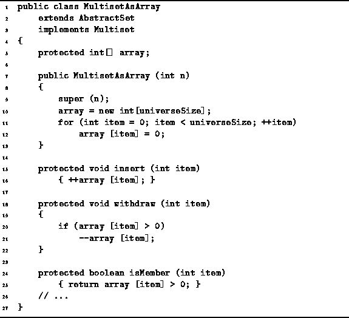

Data Structures and Algorithms
with Object-Oriented Design Patterns in Java
Data Structures and Algorithms
with Object-Oriented Design Patterns in Java
Program  defines the constructor for the MultisetAsArray
class as well as the three basic operations--insert, isMember, and withdraw.
The constructor takes a single argument,
defines the constructor for the MultisetAsArray
class as well as the three basic operations--insert, isMember, and withdraw.
The constructor takes a single argument,
 ,
and initializes an array of length N counters all to zero.
The running time of the constructor is O(N).
,
and initializes an array of length N counters all to zero.
The running time of the constructor is O(N).

Program: MultisetAsArray class constructor, insert, withdraw, and isMember methods.
To insert an item, we simply increase the appropriate counter; to delete an item, we decrease the counter; and to test whether an item is in the set, we test whether the corresponding counter is greater than zero. In all cases the operation can be done in constant time.
 Copyright © 1998 by Bruno R. Preiss, P.Eng. All rights reserved.
Copyright © 1998 by Bruno R. Preiss, P.Eng. All rights reserved.